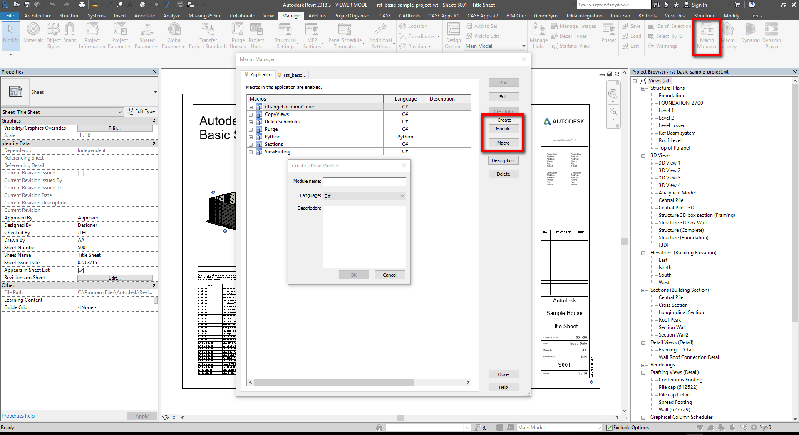

<!doctype html>
<html lang="en">
    <head>
        <meta charset="utf-8">
        <title>RevealJS : c:\Users\giovanni.brogiolo\PycharmProjects\PresentationCompDes18\compDes18Pres.md</title>
        <link rel="stylesheet" href="css/reveal.css">
        <link rel="stylesheet" href="css/theme/black.css" id="theme">
         <link rel="stylesheet" href="myTheme.css" id="theme">
       
        <!-- For syntax highlighting -->
        <link rel="stylesheet" href="lib/css/Zenburn.css">

        

        <!-- If the query includes 'print-pdf', use the PDF print sheet -->
        <script>
          document.write( '<link rel="stylesheet" href="css/print/' + ( window.location.search.match( /print-pdf/gi ) ? 'pdf' : 'paper' ) + '.css" type="text/css" media="print">' );
        </script>

        <style type="text/css">
            @page {    
              margin: 0;
              size: auto; 
            }
        </style>

        <script>
         if(window.location.search.match( /print-pdf-now/gi )) {
           window.print();
         }
      </script>

    </head>
    <body>

        <div class="reveal">
            <div class="slides"><section  data-markdown><script type="text/template">
## WHY C#?
<hr>
1. Most of the examples online are written in C#    
2. Same language is used to build Zero Touch Nodes
3. Independent from Dynamo version
4. Faster execution and keyboard shortcuts available

<aside class="notes"></aside></script></section><section  data-markdown><script type="text/template">
## DISCLAIMER!
***
1. This is not a class on C# language
2. There are many C# fundamentals concept that will not be covered
3. I will give you lots of homework to do
</script></section><section  data-markdown><script type="text/template">

## EXTENDING REVIT
***

1. External command
    - Commands are added to the External Tools pulldown in the ribbon Add-Ins tab

2. External application
    - Applications can create new panels in the ribbon Add-Ins tab
    - External applications can invoke external commands

3. SharpDevelop macro  

##### [source: ADN Revit Training Material, 1_Revit_API_Intro](https://github.com/ADN-DevTech/RevitTrainingMaterial/blob/master/Presentation/1_Revit_API_Intro.pptx)

</script></section><section  data-markdown><script type="text/template">

## TOOLS
***
- *RevitLookup*  
Allows you to “snoop” into the Revit database structure. “must have” for any Revit API programmers. Available on ADN DevTech on [Github](https://github.com/jeremytammik/RevitLookup)

- *Add-In Manager*  
Allows you to load your dll while running Revit without registering an addin and to rebuild dll without restarting Revit. [more info here](http://teocomi.com/revit-add-in-manager-external-tools/)

<br>

##### [source: ADN Revit Training Material, 1_Revit_API_Intro](https://github.com/ADN-DevTech/RevitTrainingMaterial/blob/master/Presentation/1_Revit_API_Intro.pptx)
</script></section><section  data-markdown><script type="text/template">

## REVIT API DOCUMENTATION
***
[revitapidocs](http://www.revitapidocs.com/) by Gui Talarico

[apidocs.co](https://apidocs.co/) by Gui Talarico

[Jeremy Tammik blog](http://thebuildingcoder.typepad.com/)

[Autodesk Developer Network](https://www.autodesk.com/developer-network/platform-technologies/revit)

[Revit Training Material](https://github.com/ADN-DevTech/RevitTrainingMaterial )

</script></section><section  data-markdown><script type="text/template">
## LET'S CREATE A MACRO
***



</script></section><section  data-markdown><script type="text/template">

## MACRO MANAGER
<hr>
*Application:*

Macro modules available to all opened Revit projects in the current instance of the Revit application.

<br>
*Active document tab:*

The active document tab represents the currently active project in Revit. The project does not necessarily contain embedded macros.

</script></section><section  data-markdown><script type="text/template">

## SHARP DEVELOP
***
- Free IDE for C#, VB.NET and Python projects on Microsoft's .NET platform.
- Create a module first and then add a macro to it.

</script></section><section  data-markdown><script type="text/template">

## PYTHON to C# #
***
1. When you declare a variable or constant, you must either specify its type or use the *var* keyword
2. You must end each statement with a semicolon;
3. Double quotes encode a string of multiple characters, single quotes encode a single character (data type *char*)
4. You don't need to worry about indentation

</script></section><section  data-markdown><script type="text/template">

## PYTHON DELETE ELEMENTS
***

```python
#Copyright(c) 2016, Dimitar Venkov
# @5devene, dimitar.ven@gmail.com

import clr

clr.AddReference("RevitServices")
import RevitServices
from RevitServices.Persistence import DocumentManager
from RevitServices.Transactions import TransactionManager
clr.AddReference("RevitAPI")
import Autodesk
from Autodesk.Revit.DB import FilteredElementCollector

doc = DocumentManager.Instance.CurrentDBDocument

view  = doc.ActiveView

collector = FilteredElementCollector( doc, view.Id ).WhereElementIsNotElementType()

elems = []

for c in collector:
	#if c.Category.Name == "Walls":
	if c.Category.HasMaterialQuantities == True:
		elems.append(c)

deleted = []
failed = []

TransactionManager.Instance.EnsureInTransaction(doc)
	
for e in elems:
	id = None
	try:
		id = e.Id
		del_id = doc.Delete(id)
		deleted.extend([d.ToString() for d in del_id])
	except:
		if id is not None:
			failed.append(id.ToString())
	
TransactionManager.Instance.TransactionTaskDone()


OUT = deleted, failed
```

</script></section><section  data-markdown><script type="text/template">


## NAMESPACE
***
*Python*
```python
import clr
clr.AddReference("RevitServices")
import RevitServices
from RevitServices.Persistence import DocumentManager
from RevitServices.Transactions import TransactionManager
clr.AddReference("RevitAPI")
import Autodesk
from Autodesk.Revit.DB import FilteredElementCollector
```

*C#*
```csharp
using System;
using Autodesk.Revit.UI;
using Autodesk.Revit.DB;
using Autodesk.Revit.UI.Selection;
using System.Collections.Generic;
using System.Linq;
```

</script></section><section  data-markdown><script type="text/template">

## DOCUMENT MANAGER
***
*Python*
```python
doc = DocumentManager.Instance.CurrentDBDocument
view  = doc.ActiveView
```

*C#*
```csharp
UIDocument uidoc = this.ActiveUIDocument;
Document doc = uidoc.Document;
```
<aside class="notes"><p>Access the UI of the currently Revit project opened. The active or top most view of the project.</p>
</aside></script></section><section  data-markdown><script type="text/template">

## SELECTION
***
*Python*
```python
collector = FilteredElementCollector( doc, view.Id ).WhereElementIsNotElementType()
```

*C#*
```csharp
FilteredElementCollector viewTypes = new FilteredElementCollector(doc, view.Id).WhereElementIsNotElementType()
```
</script></section><section  data-markdown><script type="text/template">

## ITERATION
***
*Python*

```python
elems = []

for c in collector:
	if c.Category.Name == "Walls":
	#if c.Category.HasMaterialQuantities == True:
		elems.append(c)
```

*C#*
```csharp
ViewFamilyType vft = null;
foreach (ViewFamilyType vt in viewTypes) {
	if (vt.FamilyName == "Drafting View"){
	vft = vt;
	}
}
```

</script></section><section  data-markdown><script type="text/template">

## TRANSACTION
***
*Python*

```python
TransactionManager.Instance.EnsureInTransaction(doc)
TransactionManager.Instance.TransactionTaskDone()
```

*C#*
```csharp
using (Transaction t = new Transaction(doc))
{
t.Start("Delete elements in View");
t.Commit();
}
```

</script></section><section  data-markdown><script type="text/template">

## CALLING A METHOD
***
*Python*

```python
del_id = doc.Delete(id)
```

*C#*
```csharp
ViewDrafting newDraftingView = ViewDrafting.Create(doc,vft.Id);
newDraftingView.Name = "My New Drafting View";
```

</script></section><section  data-markdown><script type="text/template">

## C# SYNTAX
***
```csharp
public void MyFirstMacro()
    {
    TaskDialog.Show("Dialog Title", "My first Macro!");
    }
```
</script></section><section  data-markdown><script type="text/template">
## Access Modifiers 
***
- **PUBLIC** Available to all callers with access to the type
- **PROTECTED**
- **INTERNAL**
- **PRIVATE**


[docs.microsoft.com](https://docs.microsoft.com/en-us/dotnet/csharp/language-reference/keywords/access-modifiers)


</script></section><section  data-markdown><script type="text/template">

## VOID 
***
The method does not return anything. For example:
```csharp
void Ok_btnClick(object sender, EventArgs e)
{
usertext = textBox1.Text;
}
```
This method sets the value of a variable.

</script></section><section  data-markdown><script type="text/template">

## RETURN
***
This method selects all the View template in the project and
return them as a list.
```csharp
public static List<View> collectTemplates(Document doc)
{
IEnumerable<View> fec = new FilteredElementCollector(doc).OfClass(typeof(View)).Cast<View>();

List<View> myVT = new List<View>();

foreach (View v in fec)
{
	if (v.IsTemplate) 
		{
		myVT.Add(v);  
		}
}
return myVT;
}
```

</script></section><section  data-markdown><script type="text/template">

## STATIC
***
No instance is required to be invoked.

```csharp
List<View> viewTemplates = collectTemplates(doc);
```
<br>
An instance can be created using the *new* keyword:

```csharp
FilteredElementCollector viewTypes = new FilteredElementCollector(doc)
	.OfClass(typeof(ViewFamilyType));
```

</script></section><section  data-markdown><script type="text/template">

## WHY I NEED TO CREATE AN INSTANCE OF SOME CLASSES?
***

</script></section><section  data-markdown><script type="text/template">

## CODE STRUCTURE

1. Store your methods in a separate Class (i.e. Helpers)
2. These methods must be *public static*
3. Add a Form to the project
4. Create an instance of the Form in ThisApplication
5. Call your methods from ThisApplication (i.e. Helpers.MethodName)

</script></section><section  data-markdown><script type="text/template">

## HELPERS
***
```csharp
public static List<View> collectTemplates(Document doc){

IEnumerable<View> fec = new FilteredElementCollector(doc)
		.OfClass(typeof(View))
		.Cast<View>();
List<View> myVT = new List<View>();

foreach (View v in fec)
{
	if (v.IsTemplate){
		myVT.Add(v);
	}
}
return myVT;
}
```

```csharp
public static
```

```csharp
IEnumerable<View>
```

</script></section><section  data-markdown><script type="text/template">

## FORM
```csharp
public partial class Form2 : frms.Form {
public int chosenView;
public Form2(Document doc) {
InitializeComponent();
List<View> viewTemplates = Helpers.collectTemplates(doc);
foreach (var v in viewTemplates) {
comboBoxDrop.Items.Add(v.Name);
}
}
void Form2Load(object sender, EventArgs e){ }
void ComboBox1SelectedIndexChanged(object sender, EventArgs e){
chosenView = comboBoxDrop.SelectedIndex;}
}
```

</script></section><section  data-markdown><script type="text/template">

## FORM NAMESPACE
```csharp
using System;
using Autodesk.Revit.UI;
using Autodesk.Revit.DB;
using Autodesk.Revit.UI.Selection;
using System.Collections.Generic;
using System.Windows.Forms;
```
When you add the Revit namespace you'll get an error
```csharp
'Form' is an ambiguous reference between 'Autodesk.Revit.DB.Form' and
'System.Windows.Forms.Form' (CS0104)
```
You can solve the ambiguity:
```csharp
using winForms = System.Windows.Forms;
...
public partial class Form1 : winForms.Form
```

</script></section><section  data-markdown><script type="text/template">

## Combobox Selected Index Changed Event
***
```csharp
void ComboBox1SelectedIndexChanged(object sender, EventArgs e)
{
chosenViewTemplate = comboBox1.SelectedIndex;
}
```

</script></section><section  data-markdown><script type="text/template">

## Add the document as an argument of the form
***
```csharp
public CreateDraftingViewForm(Document doc)
```

</script></section><section  data-markdown><script type="text/template">

## THIS APPLICATION
***
```csharp
public void PopulateDropDown()
{
UIDocument uidoc = this.ActiveUIDocument;
Document doc = uidoc.Document;
List<View> allViewTemplates = Helpers
			.collectTemplates(doc);
using(var forma = new Form2(doc)){
//use ShowDialog to show the form as a modal dialog box.
forma.ShowDialog();
TaskDialog.Show("result",
		allViewTemplates[forma.chosenView].Name);
}
```

</script></section><section  data-markdown><script type="text/template">

## How to access properties inside classes
***
```csharp
TaskDialog.Show("ViewTemplateSelected", form.chosenViewTemplate);
```

</script></section><section  data-markdown><script type="text/template">

## Use while to keep the Dialog box open
***
```csharp
string interrupt = "False";
while(interrupt == "False") {
form.ShowDialog();
if (form.usertext.Length >2) {
Helpers.AddDraftingView(doc, form.usertext, form.chosenTemplateId);
interrupt = "True";
}
else if (form.usertext == "") {
TaskDialog.Show("Error", "Please specify the view name"); }
else if (form.usertext.Length <2) {
TaskDialog.Show("Error", "The view name is too short");   }
else { TaskDialog.Show("Error", "I don't know what went wrong");  }
}
```
               

</script></section><section  data-markdown><script type="text/template">

## HELLO WORLD!
***
```csharp
public void disallowBeamJoins(){
UIDocument uidoc = this.ActiveUIDocument;
Document doc = uidoc.Document;

ICollection<ElementId> selElementsIds = uidoc.Selection.GetElementIds();
List<Element> selElements = new List<Element>();
string selected = "";
foreach (var element in selElementsIds) {
	selected += element.ToString() +"\n";
	selElements.Add(doc.GetElement(element));	
}
TaskDialog.Show("Selected Element Id", selected)
}
```
</script></section><section  data-markdown><script type="text/template">
## HELLO WORLD!
***
```csharp
using (Transaction t = new Transaction(doc, "Disallow Joins")){
	t.Start();
		foreach (Element e in selElements){
			FamilyInstance fa = e as FamilyInstance;
			StructuralFramingUtils.DisallowJoinAtEnd(fa, 0);
			StructuralFramingUtils.DisallowJoinAtEnd(fa, 1);
		}
	t.Commit();
}
TaskDialog.Show("title", selElements.Count.ToString());
}
```
</script></section><section  data-markdown><script type="text/template">
<iframe src="https://giobel.github.io/PresentationCompDes18/compDes18Pres-export/index1" width= "900"  height="500" scrolling="no"></iframe>

</script></section><section  data-markdown><script type="text/template">
<a href="http://tt-acm.github.io/Spectacles.WebViewer/" data-preview-link>spectacles</a></script></section></div>
        </div>

        <script src="lib/js/head.min.js"></script>
        <script src="js/reveal.js"></script>

        <script>
            function extend() {
              var target = {};
              for (var i = 0; i < arguments.length; i++) {
                var source = arguments[i];
                for (var key in source) {
                  if (source.hasOwnProperty(key)) {
                    target[key] = source[key];
                  }
                }
              }
              return target;
            }
            // Optional libraries used to extend on reveal.js
            var deps = [
              { src: 'lib/js/classList.js', condition: function() { return !document.body.classList; } },
              { src: 'plugin/markdown/marked.js', condition: function() { return !!document.querySelector('[data-markdown]'); } },
              { src: 'plugin/markdown/markdown.js', condition: function() { return !!document.querySelector('[data-markdown]'); } },
              { src: 'plugin/highlight/highlight.js', async: true, callback: function() { hljs.initHighlightingOnLoad(); } },
              { src: 'plugin/notes/notes.js', async: true, condition: function() { return !!document.body.classList; } },
              { src: 'plugin/math/math.js', async: true }
            ];
            // default options to init reveal.js
            var defaultOptions = {
              controls: true,
              progress: true,
              history: true,
              center: true,
              transition: 'default',
              dependencies: deps
            };
            // options from URL query string
            var queryOptions = Reveal.getQueryHash() || {};
            var options = {
  "notesSeparator": "note:",
  "separator": "^[\r\n?|\n]---[\r\n?|\n]$",
  "verticalSeparator": "^[\r\n?|\n]--[\r\n?|\n]$",
  "theme": "black",
  "highlightTheme": "Zenburn",
  "controls": true,
  "progress": true,
  "slideNumber": false,
  "history": true,
  "keyboard": true,
  "overview": true,
  "center": false,
  "touch": true,
  "loop": false,
  "rtl": false,
  "shuffle": false,
  "fragments": true,
  "embedded": false,
  "help": true,
  "showNotes": false,
  "autoSlide": 0,
  "autoSlideStoppable": true,
  "mouseWheel": false,
  "hideAddressBar": true,
  "previewLinks": false,
  "transition": "none",
  "transitionSpeed": "default",
  "backgroundTransition": "default",
  "viewDistance": 3,
  "parallaxBackgroundImage": "",
  "parallaxBackgroundSize": "",
  "parallaxBackgroundHorizontal": null,
  "parallaxBackgroundVertical": null,
  "slideExplorerEnabled": true,
  "browserPath": null,
  "customTheme": "myTheme",
  "width": "80%",
  "height": "80%",
  "margin": 0.1,
  "minScale": 1,
  "maxScale": 1,
  "attributes": ""
};
            options = extend(defaultOptions, options, queryOptions);
            Reveal.initialize(options);

        </script>
        
    </body>
</html>